title | code |
|---|---|
Average annual population to calculate regional GDP data (thousand persons) by NUTS 3 regions | nama_10r_3popgdp |
Gross domestic product (GDP) at current market prices by NUTS 3 regions | nama_10r_3gdp |
European Union trade mark (EUTM) applications per billion GDP by NUTS 3 regions | ipr_ta_gdpr |
Community design (CD) applications per billion GDP by NUTS 3 regions | ipr_da_gdpr |
Assignment 4
restatapi
Toc. eurostat
Vi starter med å hente innholsfortegnelsen fra eurostat. Vi henter innholdsfortegnelsen i rent tekst format. Innholdsfortegnelsen gir vi navnet toc_txt.
GDP NUTS 3
Vi søker i toc_txt etter tabeller med GDP på nivå NUTS 3 vha. funksjonen str_detect(). Denne funksjonen skiller mellom store og små bokstaver. Siden vi ikke vet hvilken skrivemåte som er brukt for gdp og NUTS 3 benytter vi regex for å matche både små og store bokstaver. Vi benytter filter() for å finne de tabellene vi ønsker. Vi benytter select() for å velge ut kolonnene title og code som vi ønsker å se på. Vi benytter flextable() for å vise tabellen. Vi benytter til slutt autofit() for å tilpasse tabellen til siden. Detaljer om regex finner dere i Slides: Strings and regular expressions og i r4ds ed. 1 chp. 14.
Vi ønsker å finne tabellbeskrivelser som både inneholder gdp og nuts 3. Trikset for enkelt å få dette til er å ha AND (&) utenfor str_detect(). Det går an å få til en AND inne i en regexp, men dette kan fort bli kronglete og komplisert.
Vi finner fire tabeller listet i toc_txt.
Vi velger å benytte tabellen med kode nama_10r_3gdp som har forklarende tekst «Gross domestic product (GDP) at current market prices by NUTS 3 regions». Vi henter «Data Structure Definition» for å finne hva som finnes i dette datasettet. Informasjonen benyttes for å definer «filters» for spørringen mot eurostat.
MERK! Merk bruken av nuts_level = “3” i filters for å få data på NUTS 3 nivå. Denne parameteren var ikke så lett å finne.
Vi laster så ned «Data Structure Definition (DSD)» for tabellen med code nama_10r_3gdp.
concept | code | name |
|---|---|---|
freq | A | Annual |
unit | MIO_EUR | Million euro |
unit | EUR_HAB | Euro per inhabitant |
unit | EUR_HAB_EU27_2020 | Euro per inhabitant in percentage of the EU27 (from 2020) average |
unit | MIO_NAC | Million units of national currency |
unit | MIO_PPS_EU27_2020 | Million purchasing power standards (PPS, EU27 from 2020) |
unit | PPS_EU27_2020_HAB | Purchasing power standard (PPS, EU27 from 2020), per inhabitant |
unit | PPS_HAB_EU27_2020 | Purchasing power standard (PPS, EU27 from 2020), per inhabitant in percentage of the EU27 (from 2020) average |
geo | EU27_2020 | European Union - 27 countries (from 2020) |
geo | BE | Belgium |
geo | BE1 | Région de Bruxelles-Capitale/Brussels Hoofdstedelijk Gewest |
geo | BE10 | Région de Bruxelles-Capitale/Brussels Hoofdstedelijk Gewest |
geo | BE100 | Arr. de Bruxelles-Capitale/Arr. Brussel-Hoofdstad |
geo | BE2 | Vlaams Gewest |
geo | BE21 | Prov. Antwerpen |
Utfra kodene i dsd_gdpkan vi da formulere følgende spørring mot Eurostat:
Vi velger å benytte MIO_PPS_EU27_2020 som mål på GNP. Dette er GNP i løpende priser (million Euro). Det kunne vært aktuelt å benytte PPS_EU27_2020_HAB som skal være GNP målt i konstant kjøpekraft. Det synes imidlertid som om PPS_EU27_2020_HAB har urimelige/åpenbart feil verdier for en del regioner.
Population demo_r_pjanaggr3
Oppgave 1
Søk i toc_txt for tabeller med population og NUTS 3. Pass på at dere dekker både population og Population og ulike skrivemåter for NUTS 3.
Oppgave 2
Finn koden for tabellen med forklarende tekst «Average annual population to calculate regional GDP data (thousand persons) by NUTS 3 regions».
Last ned Data Structure Definition (DSD) for denne tabellen.
Bruk opplysningene i DSD for å formulere en spørring mot Eurostat og last ned dataene. Gi dataene lastet ned samme navn som Eurostat sin kode for tabellen. Vi er bare interessert i totalbefolkning og ignorerer derfor både kjønn og alder. Vi ønsker data for årene 2000-2020.
Bruk
filter(str_length(geo) == 5)for å begrense datasettet til NUTS3 regioner. Vi vil gjøre vår egen aggregering.Hent data for landene:
Oppgave 3
Hent ned befolkningsdata fra tabellen som har teksten «Population on 1 January by broad age group, sex and NUTS 3 region». Gi også her dataene samme navn som tabell-koden hos Eurostat. Igjen vil vi ikke skille på kjønn eller alder.
Oppgave 4
Bruk setdiff() for å finne NUTS3 soner som inngår i «Average annual population to calculate regional GDP data (thousand persons) by NUTS 3 regions», men ikke i «Population on 1 January by broad age group, sex and NUTS 3 region».
[1] "DKZZZ" "ESZZZ" "ITG2D" "ITG2E" "ITG2F" "ITG2G" "ITG2H" "ITZZZ" "NLZZZ"
[10] "NO020" "NO074" "NO081" "NO082" "NO091" "NO092" "NO0A1" "NO0A2" "NO0A3"
[19] "NO0B2" "NOZZZ"Oppgave 5
Bruk setdiff() for å finne NUTS3 soner som inngår i «Population on 1 January by broad age group, sex and NUTS 3 region», men ikke i «Average annual population to calculate regional GDP data (thousand persons) by NUTS 3 regions».
[1] "BE221" "BE222" "BE321" "BE322" "BE324" "BE325" "BE326" "BE327" "FRXXX"
[10] "ITG25" "ITG26" "ITG27" "ITG28" "ITG29" "ITG2A" "ITG2B" "ITG2C" "NO011"
[19] "NO012" "NO021" "NO022" "NO031" "NO032" "NO033" "NO034" "NO041" "NO042"
[28] "NO043" "NO051" "NO052" "NO053" "NO061" "NO062" "NO072" "NO073"Oppgave 6
Gjør en full_join() av de to populasjonstabellene. Gi resultatet navnet full_pop_nuts3.
Et alternativ som kanskje er mer «clean», er å plukke ut de variablene vi trenger før full_join().
Oppgave 7
Bruk setdiff() for å sjekke sonene i full_pop_nuts3 mot dem vi har i GDP tabellen.
[1] "BE221" "BE222" "BE321" "BE322" "BE324" "BE325" "BE326" "BE327" "FRXXX"
[10] "ITG25" "ITG26" "ITG27" "ITG28" "ITG29" "ITG2A" "ITG2B" "ITG2C" "NO011"
[19] "NO012" "NO021" "NO022" "NO031" "NO032" "NO033" "NO034" "NO041" "NO042"
[28] "NO043" "NO051" "NO052" "NO053" "NO061" "NO062" "NO072" "NO073"Oppgave 8
Bruk setdiff() for å sjekke sonene i GDP tabellen mot dem vi har i full_pop_nuts3.
[1] "ATZZZ" "BEZZZ" "FIZZZ" "FRZZZ" "PTZZZ" "SEZZZ"Oppgave 9
Fjern **ZZZ sonene fra nama_10r_3gdp.
geo time pop.x pop.y
1: NO053 2014 261458 NA
2: NO060 2014 441193 443090
3: NO061 2014 306067 NA
4: NO053 2015 263736 NA
5: NO060 2015 NA 447910
6: NO061 2015 310093 NA
7: NO053 2016 265151 NA
8: NO060 2016 449457 452090
9: NO061 2016 313105 NA
10: NO053 2017 266274 NA
11: NO060 2017 454596 457000
12: NO061 2017 317363 NA
13: NO053 2018 266858 NA
14: NO060 2018 458742 460170
15: NO061 2018 320884 NA
16: NO053 2019 267420 NA
17: NO060 2019 462032 465910
18: NO053 2020 267642 NA
19: NO060 2020 465136 469910Oppgave 10
Lag en ny variabel pop i full_pop_nuts3 ut fra diskusjonen ovenfor. Dropp deretter variablene pop.x og pop.y.
Oppgave 11
Undersøk om vi har noen NUTS 3 soner med pop lik 0. Hvis det er noen så rekod disse til NA
geo time pop
0 0 117 Her fant vi at det er 117 hvor antallet er 0
ag_comment: Ok løsning, men mutate_at() er på veg ut. Jeg vil foreslå en enkel ifelse().
Her har vi endret alle 0 verdiene i kollonne pop til NA verdi, så kontrollerer vi at vi ikke har flere 0 verdier
geo time pop
0 0 NA Oppgave 12
Utfør en left_join() der populasjonsdata blir lagt til datasettet som innholder GDP-data. Gi resultatet navnet eu_data.
[1] 21282 4Her ser vi at vi ikke har likt som i oppgavesettet, men vi finner ikke hvor feilen ligger. Avviket er 123. Vi ser også i oppgave 12 at disse tallene kommer opp som NA verdier.
# A tibble: 16 × 2
country Antall
<chr> <int>
1 AT 36
2 BE 45
3 CH 26
4 DE 401
5 DK 12
6 EL 52
7 ES 60
8 FI 20
9 FR 102
10 IE 8
11 IT 108
12 NL 41
13 NO 13
14 PL 73
15 PT 26
16 SE 22 geo time gdp pop
Length:21282 Length:21282 Min. :4.539e+07 Min. : 8400
Class :character Class :character 1st Qu.:2.906e+09 1st Qu.: 132899
Mode :character Mode :character Median :5.293e+09 Median : 241464
Mean :9.972e+09 Mean : 373445
3rd Qu.:1.030e+10 3rd Qu.: 441000
Max. :2.606e+11 Max. :6747068
NA's :233
country
Length:21282
Class :character
Mode :character
Oppgave 13
Beregn gdp_per_capita for hver NUTS3 region for årene 2000-2020. Avrund til 2 desimaler.
Avrunder til to desimaler.
Sjekker summary gdp_per_capita.
gdp_per_capita
Min. : 3359
1st Qu.: 18277
Median : 23258
Mean : 25291
3rd Qu.: 29392
Max. :177583
NA's :233 Oppgave 14
Bruk case_when() for å legge til variabelen country_name før vi går videre. Østerrike for AT, Belgia for BE etc..
Oppgave 15
Lag de tre variablene NUTS2, NUTS1 og NUTSc fra NUTS3. Dette gjøres enklest vha. mutate() og str_sub(). Bruker også select() for å få variablene i rekkefølgen: country_name, country, year, NUTS3, NUTS2, NUTS1, NUTSc, gdp, pop, gdp_per_capita . NUTSc er vår egen «oppfinnelse» og angir land (to første karakterer i NUTS kode).
Oppgave 16
Bruk koden nedenfor til å beregne Gini-koeffisienter på NUTS2 nivå. Beregn også populasjonen og gdp på NUTS2 nivå. Bruk de to siste for å regne ut gdp_per_capita for hvert NUTS2 område. Finn også antall NUTS3 regioner som finnes i hver NUTS2 region. Gi denne variabelen navnet num_nuts3. Det er viktig at dere beregner Gini-koeffisient før dere aggregerer populasjon og GDP. Resultatet legger dere i en tibble kalt gini_NUTS2.
country_name country NUTS2 year
Length:4413 Length:4413 Length:4413 Length:4413
Class :character Class :character Class :character Class :character
Mode :character Mode :character Mode :character Mode :character
pop gdp gdp_per_capita num_nuts3
Min. : 0 Min. :4.539e+07 Min. : 3359 Min. : 1.000
1st Qu.: 588044 1st Qu.:1.401e+10 1st Qu.:19725 1st Qu.: 2.000
Median : 1344629 Median :3.272e+10 Median :25070 Median : 4.000
Mean : 1781248 Mean :4.809e+10 Mean : Inf Mean : 4.823
3rd Qu.: 2319035 3rd Qu.:6.056e+10 3rd Qu.:32278 3rd Qu.: 6.000
Max. :12291557 Max. :6.996e+11 Max. : Inf Max. :23.000
gini_nuts2
Min. :0.0000
1st Qu.:0.0596
Median :0.1016
Mean :0.1197
3rd Qu.:0.1603
Max. :0.4550
NA's :923 Vi ser at vi har et spenn i Gini-koeffisienten på NUTS2 nivå fra 0.00 til 0.45. Vi har også 800 NAs som stammer fra de 110 NA-ene vi har i pop. Vi ser også at antall NUTS3 i NUTS2 regioner spenner fra 1 til 23.
Sjekker obs. med Gini avrundet til 0,0000.
# A tibble: 5 × 8
country NUTS2 year pop gdp gdp_per_capita num_nuts3 gini_nuts2
<chr> <chr> <chr> <dbl> <dbl> <dbl> <int> <dbl>
1 AT AT34 2002 352574 9450050000 26803. 2 0.000358
2 ES ES43 2001 1059011 12749280000 12039. 2 0.000917
3 ES ES43 2006 1074937 17609920000 16382. 2 0.000850
4 IT ITF5 2006 589480 11135870000 18891. 2 0.0000134
5 PL PL43 2011 1010700 14215740000 14065. 2 0.000745 Oppgave 17
country_name country NUTS1 year
Length:1765 Length:1765 Length:1765 Length:1765
Class :character Class :character Class :character Class :character
Mode :character Mode :character Mode :character Mode :character
pop gdp gdp_per_capita num_nuts3
Min. : 0 Min. :4.539e+07 Min. : 6423 Min. : 1.00
1st Qu.: 1722247 1st Qu.:4.074e+10 1st Qu.:20511 1st Qu.: 5.00
Median : 3660852 Median :8.659e+10 Median :26424 Median : 8.00
Mean : 4453624 Mean :1.202e+11 Mean : Inf Mean :12.06
3rd Qu.: 5866219 3rd Qu.:1.499e+11 3rd Qu.:35154 3rd Qu.:15.00
Max. :18064692 Max. :6.996e+11 Max. : Inf Max. :96.00
gini_nuts1
Min. :0.0205
1st Qu.:0.0841
Median :0.1264
Mean :0.1340
3rd Qu.:0.1681
Max. :0.3912
NA's :364 Oppgave 18
country_name country NUTSc year
Length:312 Length:312 Length:312 Length:312
Class :character Class :character Class :character Class :character
Mode :character Mode :character Mode :character Mode :character
pop gdp gdp_per_capita num_nuts3
Min. : 3525494 Min. :9.547e+10 Min. : 8859 Min. : 6.00
1st Qu.: 7995331 1st Qu.:2.108e+11 1st Qu.:23525 1st Qu.: 22.00
Median :10558176 Median :3.123e+11 Median :28395 Median : 41.00
Mean :25194380 Mean :6.802e+11 Mean :29173 Mean : 68.21
3rd Qu.:43474746 3rd Qu.:1.011e+12 3rd Qu.:34344 3rd Qu.: 73.00
Max. :83166711 Max. :3.147e+12 Max. :61796 Max. :401.00
gini_nutsc
Min. :0.1129
1st Qu.:0.1440
Median :0.1696
Mean :0.1760
3rd Qu.:0.2006
Max. :0.3843 Oppgave 19
Oppgave 20
Oppgave 21
Oppgave 22
Oppgave 23
Lag et lineplot i ggplot som viser utviklingen i Gini-koeffisient på nasjonsnivå for de 16
landene vi har med. Husk argumentet group =.
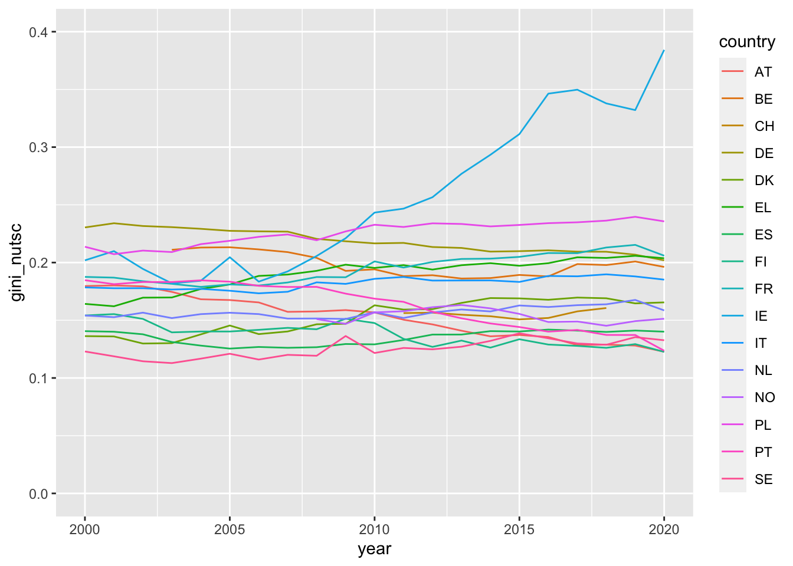
country_name | gini_nutsc |
|---|---|
Irland | 0.3842526 |
Polen | 0.2356700 |
Frankrike | 0.2059513 |
Hellas | 0.2037289 |
Tyskland | 0.2019286 |
Belgia | 0.1961939 |
Italia | 0.1852001 |
Danmark | 0.1654875 |
Nederland | 0.1585346 |
Norge | 0.1513034 |
Spania | 0.1401269 |
Sverige | 0.1326921 |
Portugal | 0.1236290 |
Østerrike | 0.1227349 |
Finland | 0.1226160 |
Oppgave 24
country_name | year | NUTS2 | gini_nuts2 |
|---|---|---|---|
Irland | 2020 | IE04 | 0.32381271 |
Irland | 2020 | IE05 | 0.38394801 |
Irland | 2020 | IE06 | 0.43667974 |
Irland | 2019 | IE04 | 0.17540553 |
Irland | 2019 | IE05 | 0.27386949 |
Irland | 2019 | IE06 | 0.39881854 |
Irland | 2018 | IE04 | 0.16908587 |
Irland | 2018 | IE05 | 0.33364852 |
Irland | 2018 | IE06 | 0.38049943 |
Irland | 2017 | IE04 | 0.15128465 |
Irland | 2017 | IE05 | |
Irland | 2017 | IE06 | 0.37038485 |
Irland | 2016 | IE04 | 0.20793713 |
Irland | 2016 | IE05 | |
Irland | 2016 | IE06 | 0.35564750 |
Irland | 2015 | IE04 | 0.20644955 |
Irland | 2015 | IE05 | |
Irland | 2015 | IE06 | 0.33868434 |
Irland | 2014 | IE04 | 0.21429267 |
Irland | 2014 | IE05 | 0.21391715 |
Irland | 2014 | IE06 | 0.39260099 |
Irland | 2013 | IE04 | 0.17296761 |
Irland | 2013 | IE05 | 0.16461776 |
Irland | 2013 | IE06 | 0.38504767 |
Irland | 2012 | IE04 | 0.19374811 |
Irland | 2012 | IE05 | 0.24498225 |
Irland | 2012 | IE06 | 0.35530299 |
Irland | 2011 | IE04 | 0.17174132 |
Irland | 2011 | IE05 | 0.24429047 |
Irland | 2011 | IE06 | 0.34423904 |
Irland | 2010 | IE04 | 0.16571209 |
Irland | 2010 | IE05 | 0.19852714 |
Irland | 2010 | IE06 | 0.32317344 |
Irland | 2009 | IE04 | 0.12750704 |
Irland | 2009 | IE05 | 0.19583203 |
Irland | 2009 | IE06 | 0.26782868 |
Irland | 2008 | IE04 | 0.09187481 |
Irland | 2008 | IE05 | 0.13684591 |
Irland | 2008 | IE06 | 0.26258760 |
Irland | 2007 | IE04 | 0.07999634 |
Irland | 2007 | IE05 | 0.15286464 |
Irland | 2007 | IE06 | 0.23501257 |
Irland | 2006 | IE04 | 0.06434473 |
Irland | 2006 | IE05 | 0.15216102 |
Irland | 2006 | IE06 | 0.22348127 |
Irland | 2005 | IE04 | 0.07961666 |
Irland | 2005 | IE05 | 0.15701288 |
Irland | 2005 | IE06 | 0.25673009 |
Irland | 2004 | IE04 | 0.08109590 |
Irland | 2004 | IE05 | 0.14181866 |
Irland | 2004 | IE06 | 0.22757402 |
Irland | 2003 | IE04 | 0.03032893 |
Irland | 2003 | IE05 | 0.15978363 |
Irland | 2003 | IE06 | 0.22778549 |
Irland | 2002 | IE04 | 0.06318606 |
Irland | 2002 | IE05 | 0.23133080 |
Irland | 2002 | IE06 | 0.21019029 |
Irland | 2001 | IE04 | 0.12956185 |
Irland | 2001 | IE05 | 0.17157285 |
Irland | 2001 | IE06 | 0.27125526 |
Irland | 2000 | IE04 | 0.12312552 |
Irland | 2000 | IE05 | 0.14272672 |
Irland | 2000 | IE06 | 0.24578635 |
Oppgave 25
Lag et line-plot som viser utviklingen i Gini-koeffisientene for NUTS2 regionene i Spania.
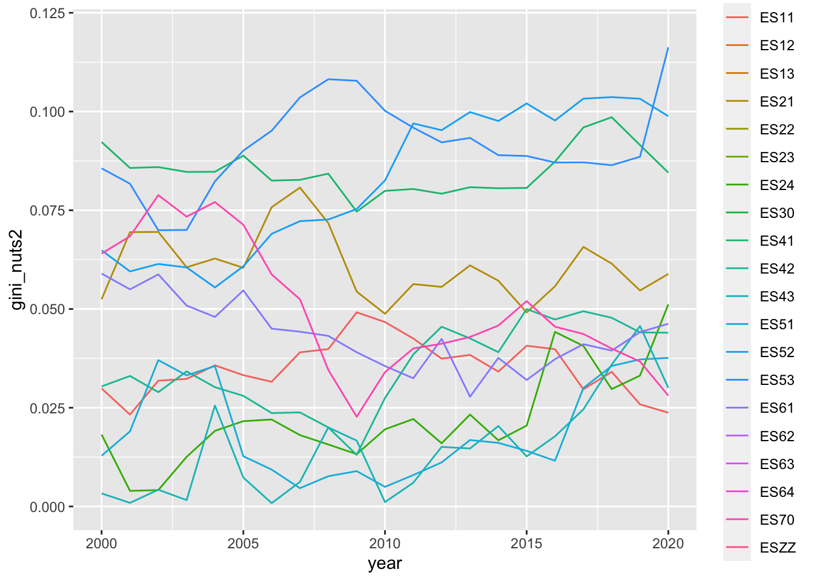
Oppgave 26
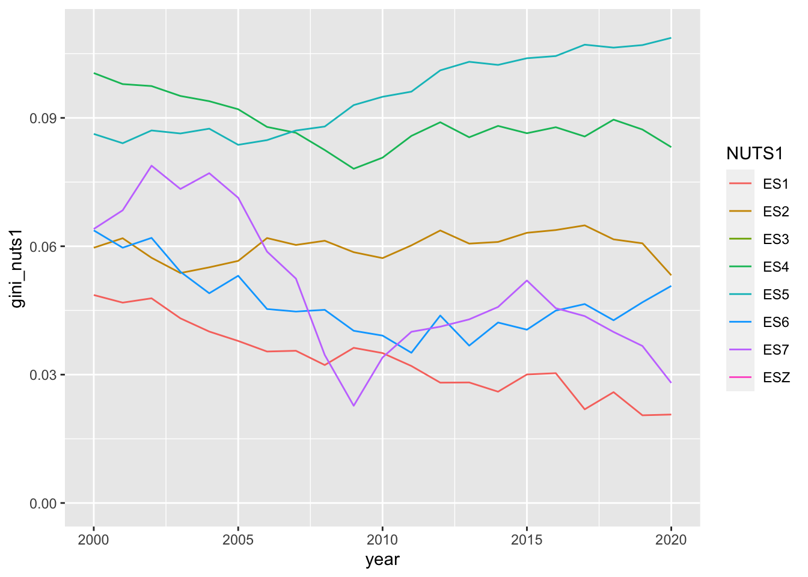
Oppgave 27
Det er større fordeling av verdiskapning i NUTS1-regionene enn NUTS2.
Oppgave 28
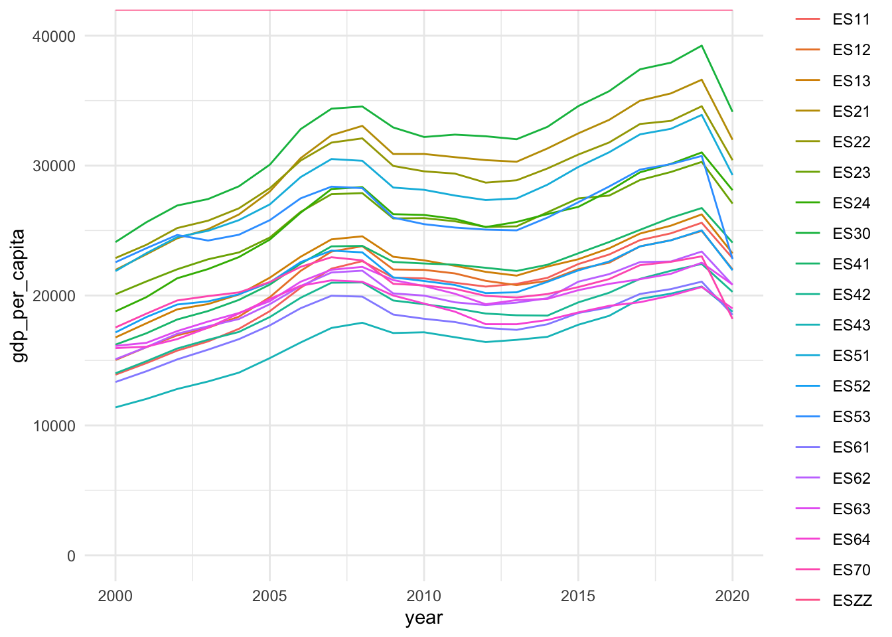
Vi ser at korona kom i 2020 som medførte at GDP falt betraktelig dette året.
Oppgave 29
Lag et line-plot som viser utviklingen i Gini-koeffisient for NUTS2 regionene i Tyskland.
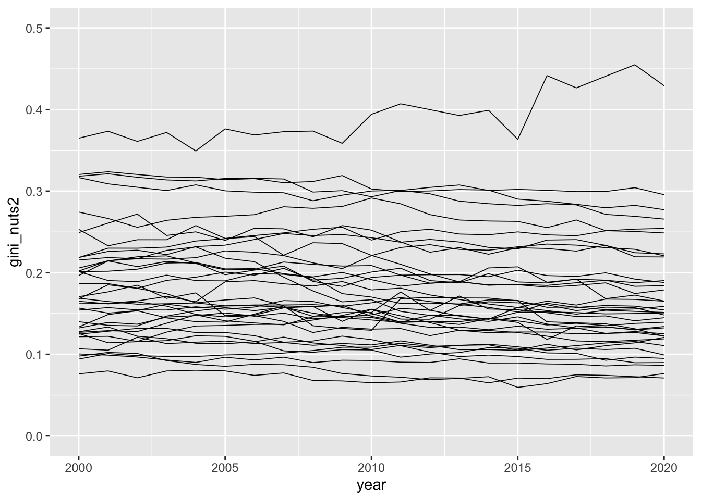
Oppgave 30
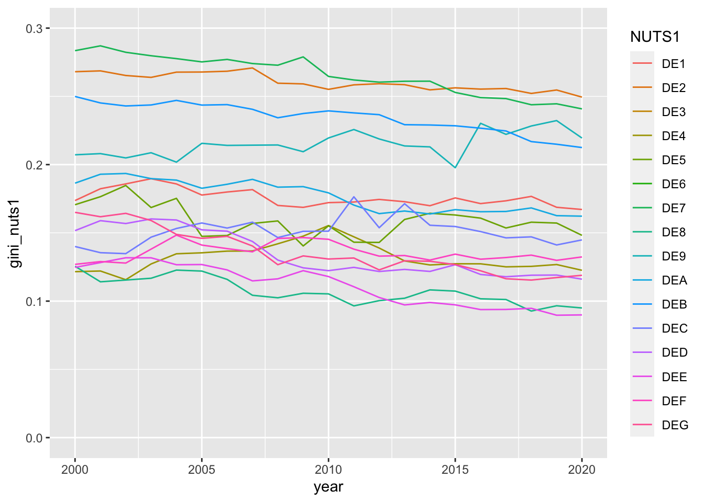
Ikke like mye spredning i NUTS1-regionene.
Oppgave 31
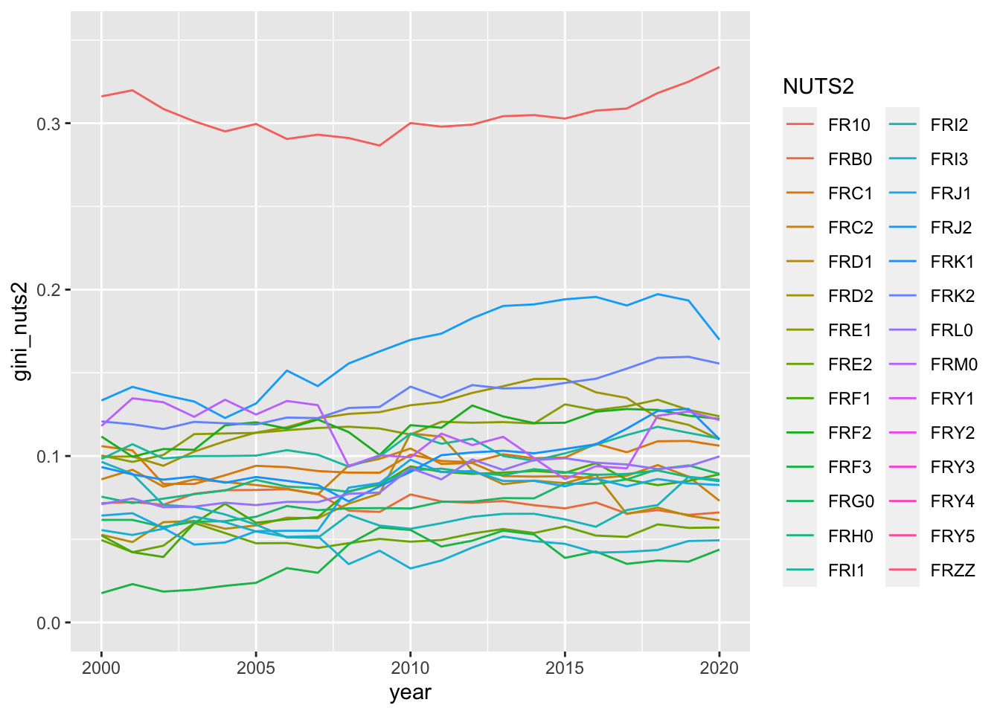
NUTS2 | gini_nuts2 |
|---|---|
FR10 | 0.33372167 |
FRJ2 | 0.16991355 |
FRK2 | 0.15555702 |
FRE1 | 0.12387708 |
FRF2 | 0.12232861 |
FRM0 | 0.12162306 |
FRI1 | 0.11044726 |
FRK1 | 0.11005305 |
FRD2 | 0.10996150 |
FRC1 | 0.10618012 |
FRL0 | 0.09979288 |
FRG0 | 0.08927537 |
FRF1 | 0.08902390 |
FRI2 | 0.08564887 |
FRH0 | 0.08486201 |
FRJ1 | 0.08255820 |
FRC2 | 0.07309852 |
FRB0 | 0.06609860 |
FRD1 | 0.06139475 |
FRE2 | 0.05704883 |
FRI3 | 0.04934755 |
FRF3 | 0.04375468 |
FRY1 | |
FRY2 | |
FRY3 | |
FRY4 | |
FRY5 | |
FRZZ |
Oppgave 32
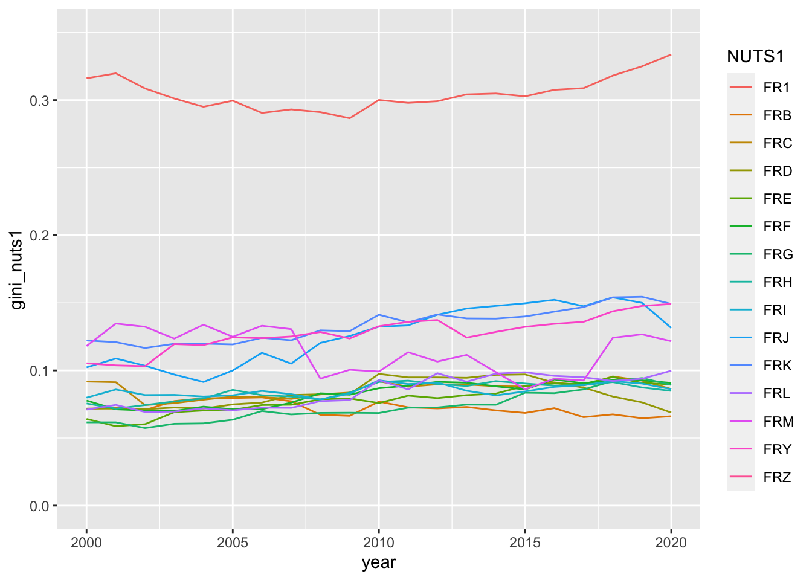
Oppgave 33
Vi ser at for Frankrike er det en region (FR1) som har klart større forskjeller mht. verdistgning enn de andre. Sjekk denne regionen nærmere.
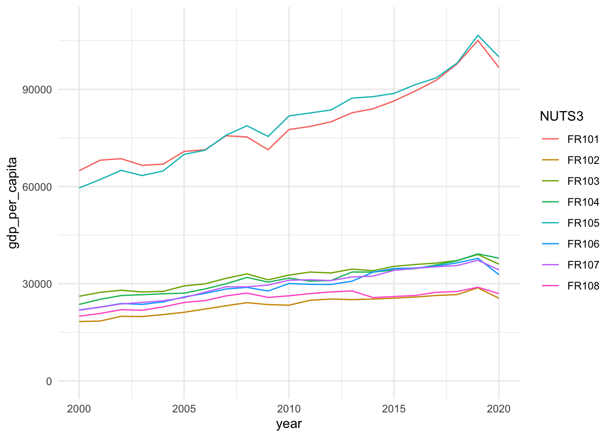
Oppgave 34
Vis utviklingen i gdp_per_capita for NUTS3 sonene i FR1.
`geom_smooth()` using method = 'loess' and formula = 'y ~ x'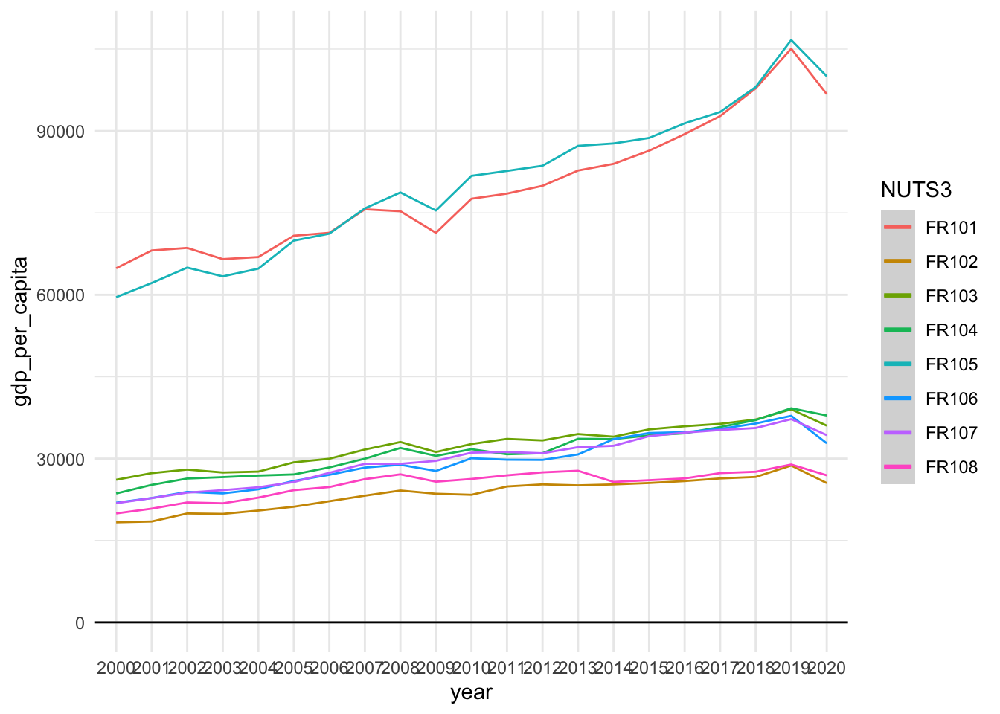
Oppgave 35
Hva ser ut til å være årsaken til den høye Gini-koeffisienten for FR1?
Det er to soner i NUTS3 som har mer enn dobbel så høy GDP per capita som de resterende. Dette gjør Gini-koeffisienten høy.
Oppgave 36
Oppgave 37
Oppgave 38
Hent ut koeffisientene fra de 173 modellene og legg resultatet i variabelen mod_coeff. Gjør dette ved å «mappe» funksjonen coeff() på list_column modell. (Hint: Husk at hvis vi ønsker en dataframe så må _df varianten av map.)
Oppgave 39
Oppgave 40
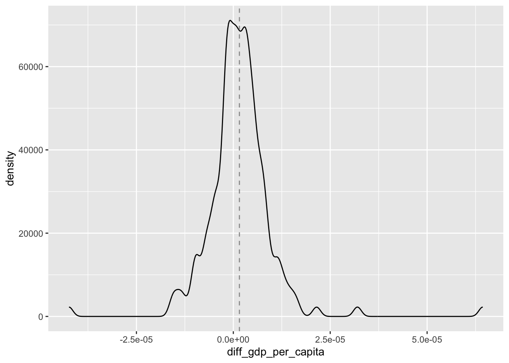
Oppgave 41
Hvor mange av de 173 regrersjonskoeffisientene for diff_gdp_per_capita er positive?
[1] 105Oppgave 42
Finn mean av de 173 koeffisientene beregnet for diff_gdp_per_capita.
[1] 1.571215e-06Oppgave 43
Utfør en enkel t-test for å teste om diff_gdp_per_capita er signifikant større enn 0.
One Sample t-test
data: NUTS2_diff$mod_coeff$diff_gdp_per_capita
t = 2.3441, df = 172, p-value = 0.02022
alternative hypothesis: true mean is not equal to 0
95 percent confidence interval:
2.481486e-07 2.894282e-06
sample estimates:
mean of x
1.571215e-06 T-test viser at diff_gdp_per_capita er signifikant større enn 0.
Oppgave 44
Bruk funksjonen plm() fra pakken plm til å utføre en panel-regresjon på dataene. For argumentet index kan dere bruke index = c("NUTS2", "year"). Bruk samme enkle modell som ovenfor dvs. diff_gini_nuts2 ~ diff_gdp_per_capita. Putt resultatet av regresjonen i et objekt p_mod.
Her forsøker vi å unneste NUTS2_diff for at plm() skal finne year.
Her forsøker vi å bruke plm(), men får feilmelding ang. “not subsettable”.
Model Formula: diff_gini_nuts2 ~ diff_gdp_per_capita
<environment: 0x143f24320>
Coefficients:
diff_gdp_per_capita
3.0341e-06 Her har vi forsøkt andre metoder, men til ingen hell.
ag_comment: Gode forslag, men problemet var altså plm() som ikke likte list-columns.